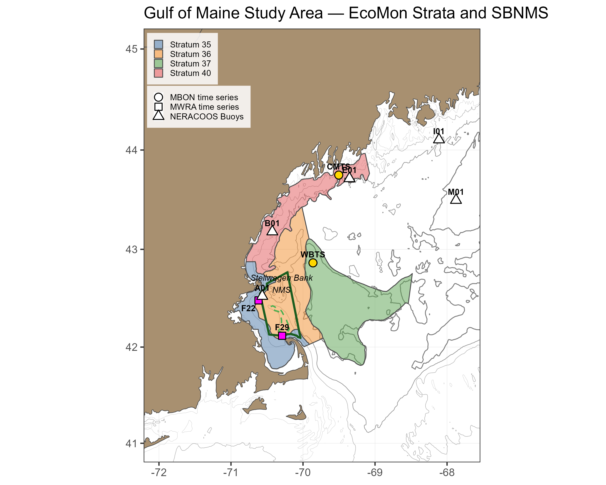

About These Figures
Sentinel indicators are measurements collected at fixed stations over time that track the status of key species and ecosystem processes. Because they are sampled repeatedly at the same location with consistent methods, they reveal changes in seasonal timing (phenology) and abundance that broad-scale surveys may miss.
The figures presented here are derived from two Gulf of Maine Marine Biodiversity Observation Network (MBON) time series stations operated by NERACOOS: the Wilkinson Basin Time Series Station (WBTS, 255 m depth) in the western Gulf of Maine (Lon −69.8616, Lat 42.8627), and the Coastal Maine Time Series Station (CMTS, 110 m depth) in the northern coastal Gulf of Maine (Lon −69.5038, Lat 43.7495). Together, these stations monitor environmental conditions, primary production, the zooplankton community, and particularly the planktonic copepod Calanus finmarchicus. C. finmarchicus is a lipid-rich species that dominates the deep-water mesozooplankton community and serves as a critical prey resource for North Atlantic right whales, herring, sand lance, and other upper trophic-level predators.
Wilkinson Basin is a key overwintering habitat for C. finmarchicus in the western Gulf of Maine, harboring one of the most abundant shelf populations across the species’ biogeographic range. This abundance reflects the convergence of several favorable oceanographic features: a circulation that delivers Calanus-rich water from northern sources, optimal temperature and food availability for growth along the Maine coast in summer, and a basin deep enough to support overwintering yet too shallow for the mesopelagic predators of the adjacent open North Atlantic.
The WBTS station is positioned to monitor this population center, while the CMTS station sits within the highly productive Maine Coastal Current, capturing the coastal production that helps sustain it. The Maine Coastal Current flows generally southwestward, transporting plankton production from the Maine coast into Wilkinson Basin, Stellwagen Bank National Marine Sanctuary, and Massachusetts Bay. From Wilkinson Basin, currents continue southward through the Great South Channel to southern New England waters and Georges Bank. Together, these circulation pathways connect productive coastal waters to the deep overwintering habitat and onward to critical foraging areas for higher trophic-level predators including the North Atlantic right whale and sand lance.
Data Source
Zooplankton samples are collected at each station using a 0.75 m diameter, 200 µm mesh ring net towed vertically from near bottom to the surface. C. finmarchicus are identified to species and developmental stage under a microscope. Total mesozooplankton biomass is determined as dry weight (g m−2). The WBTS station has been sampled since December 2004; the CMTS station since 2008. Sampling frequency varies but typically includes multiple cruises per season aboard the R/V Gulf Challenger (UNH).
Initially maintained through short-term research projects with periodic funding gaps, both stations were integrated into the Gulf of Maine MBON in 2019 with support from BOEM and the National Oceanographic Partnership Program. Since 2020, the stations have been administered by NERACOOS as part of the U.S. Integrated Ocean Observing System (IOOS), providing long-term operational stability.
Data management and quality control are handled by the MBON team. Source data are publicly available via ERDDAP and updated following sample processing and QA/QC.
Calanus Abundance Index
The Calanus Abundance Index (CI) tracks the abundance (no. m−2) of late copepodid stages (C3 through adult C6) of C. finmarchicus. The index is restricted to late stages to maintain comparability with NOAA EcoMon survey data, which use a coarser 333 µm mesh that allows younger stages (C1–C2) to escape. These are also the lipid-accumulating stages preyed upon by North Atlantic right whales and forage fish.
Plot Types
Phenology plots show the annual cycle of Calanus Abundance Index across day of year. All years of observations are overlaid, with the three most recent years highlighted in distinct colors and shapes. A GAM climatology line with a 95% confidence ribbon shows the expected seasonal pattern. Dashed vertical lines mark season boundaries.
Seasonal anomaly plots show how each year departs from a reference-period baseline for a single season. The reference period represents pre-shift “normal” conditions. For WBTS, the reference period is 2004–2010 (n = 7 years); for CMTS, it is 2008–2010 (n = 3 years). The short CMTS reference period is driven by data availability; CMTS anomalies should be interpreted with more caution. Bar color indicates statistical significance: blue = significantly above reference, red = significantly below reference, gray = not significantly different from reference. Error bars show the 95% credible interval. Small dark points show individual raw observations; gold triangles indicate observations beyond the axis range.
The reference periods end in 2010, chosen to precede a major oceanographic shift in the Northwest Atlantic. Around 2010, a slowdown of the Atlantic Meridional Overturning Circulation (AMOC) and a northward shift of the Gulf Stream altered the water masses entering the Gulf of Maine. The proportion of warm Atlantic Slope Water increased relative to the cooler Labrador Slope Water that historically dominated deep inflows through the Northeast Channel. These changes have been linked to declines in C. finmarchicus abundance, shifts in the mesozooplankton community, and changes in the migratory habitat of North Atlantic right whales. The anomalies presented here measure departure from this pre-shift baseline.
Analysis Methods
The analysis uses Generalized Additive Models (GAMs) fit separately per station, variable, and season. Each GAM includes a smooth term for day of year (cyclic spline) and a smooth term for year, fit by REML. Calanus abundance and biomass are square-root transformed for model fitting; all reported values are back-transformed to the natural scale.
An anomaly is the difference between a year’s GAM-fitted value and the mean of fitted values across the reference-period years, both evaluated at the mid-season day of year. Uncertainty is estimated by drawing 1,000 samples from the GAM coefficient posterior and computing the anomaly for each draw; the 2.5th and 97.5th percentiles form the 95% credible interval. A bar is colored blue or red only when this interval does not cross zero.
How to Read the Plot
Phenology Plot
| Element | Meaning |
|---|---|
| Colored points (recent years) | Observations from the three most recent years, each in a distinct color and shape |
| Grey points | Observations from all earlier years |
| Solid line + shaded ribbon | GAM climatology fit and 95% confidence interval |
| Dashed vertical lines | Season boundaries (Winter / Spring / Summer / Fall) |
Seasonal Anomaly Bar Chart
| Element | Meaning |
|---|---|
| Blue bar | Year significantly above the reference-period baseline |
| Red bar | Year significantly below the reference-period baseline |
| Gray bar | Year not significantly different from the baseline |
| Error bars | 95% credible interval |
| Dark points | Individual raw observations (anomaly from the reference-period phenology curve at that day of year) |
| Gold triangles | Outlier observations beyond the axis range, labeled with actual value |
Sentinel Dashboard
Summary of latest available year status and recent trend for the selected station and variable, relative to the reference period. “Status” indicates whether the most recent year’s modeled value is statistically above, below, or near the reference-period baseline. “5-Year Trend” indicates the direction of change over the most recent five years of fitted values.
| Season | Status | 5-Year Trend |
|---|
References
Dullaert, E.C., J.A. Runge, L. Karp-Boss, S. Shellito, C.R.S. Thompson, and R.J. Jones (2026). Response of the mesozooplankton community in the western Gulf of Maine to changing oceanographic conditions: the 2010 regime shift. Journal of Plankton Research 48(1): fbaf066. https://doi.org/10.1093/plankt/fbaf066.
Meyer-Gutbrod, E.L., C.H. Greene, K.T.A. Davies, and D.G. Johns (2021). Ocean regime shift is driving collapse of the North Atlantic right whale population. Oceanography 34(3): 22–31.
Record, N.R., J.A. Runge, D.E. Pendleton, et al. (2019). Rapid climate-driven circulation changes threaten conservation of endangered North Atlantic right whales. Oceanography 32(2): 162–169.
Runge, J.A., et al. (2025). Zooplankton monitoring at fixed station time series in the western Gulf of Maine. Progress in Oceanography.
Thompson, C.R.S., et al. (2025). Modeling the advective supply of Calanus finmarchicus to the western Gulf of Maine. Progress in Oceanography.
Townsend, D.W., N.R. Pettigrew, M.A. Thomas, and S. Moore (2023). Warming waters of the Gulf of Maine: the role of shelf, slope and Gulf Stream water masses. Progress in Oceanography 215: 103030. https://doi.org/10.1016/j.pocean.2023.103030.
Plourde, S., et al. (2024). Calanus species distribution models and NARW foraging habitat in Canadian waters. DFO CSAS Research Document 2024/039.
NOAA State of the Ecosystem — WBTS Zooplankton Catalog Entry